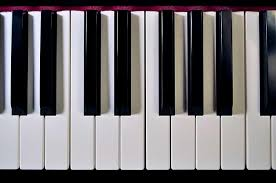

Mine Interesser
Styrketrening
Jeg startet med styrke trening når jeg var 15 år, og siden har jeg vært avhengig. Jeg startet å trene på grunn av pappa og brødrene mine, som også trente mye. Jeg trener 5-6 dager i uka vannligvis på feel24 Lommedalen
Snowboarding

Snowboarding er en hobby som staret når jeg var 5 år. Siden pappa står på snowboard var det naturlig for meg også å starte. Så nå står jeg på snowboard hver vinter med kompiser. jeg bor vedlig nærme en slalom bakke, men den er ikke veldig stor.
Gaming

Jeg ble introdusert til gaming når jeg fikk min første 3ds når jeg var 4 år. På den spilte jeg super mario bros, og lego spill. i senere tid har jeg byttet til PC spill som dark souls og apex legends. Jeg bruker en del tid på gaming, og det er en fantastisk måte å frakoble.
Musikk
I hustanden til familien min har det altid vært instrumenter tilgjengelig, alt i fr piano til trommer til guitar. Jeg har prøvd å lære både guitar og piano, men det var piano jeg ble best i. Uten om spilling av instrumenter hører jeg også veldig mye å musikk, favouritt sangen min er "Bones in the ocean" av The longest John